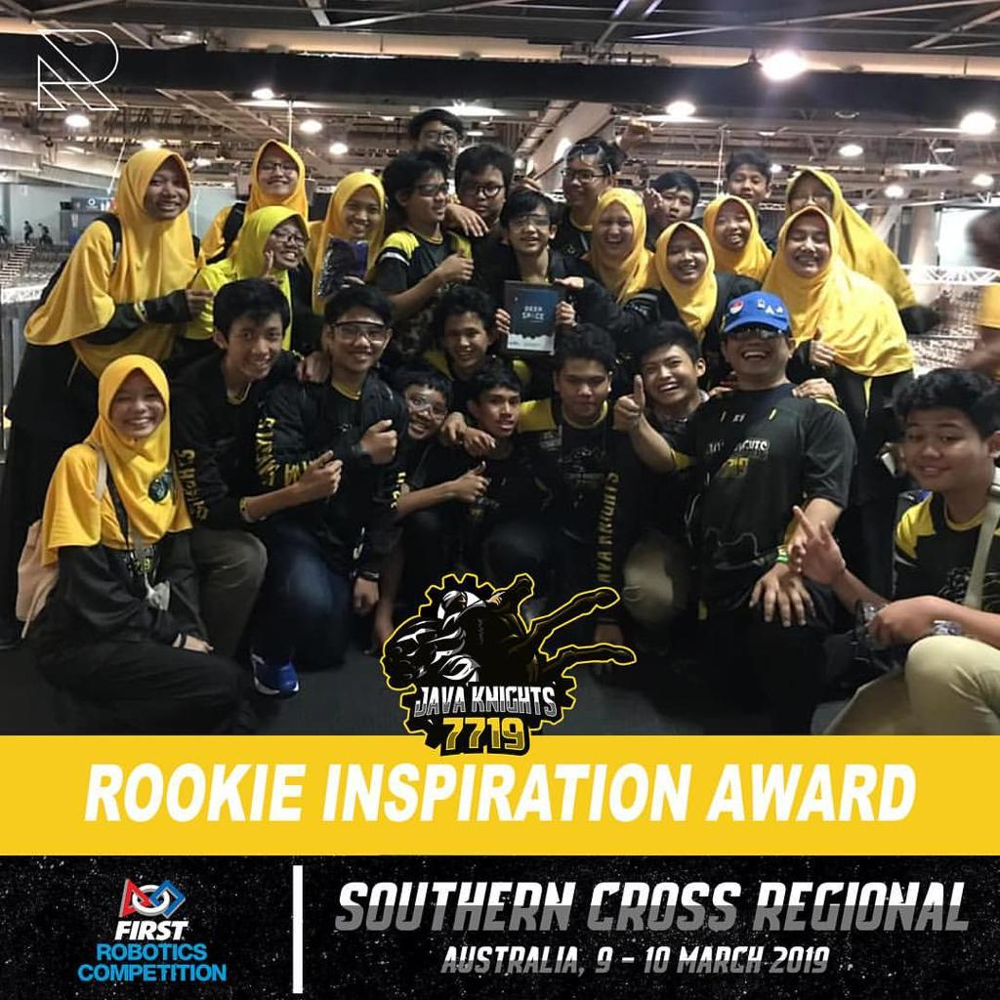
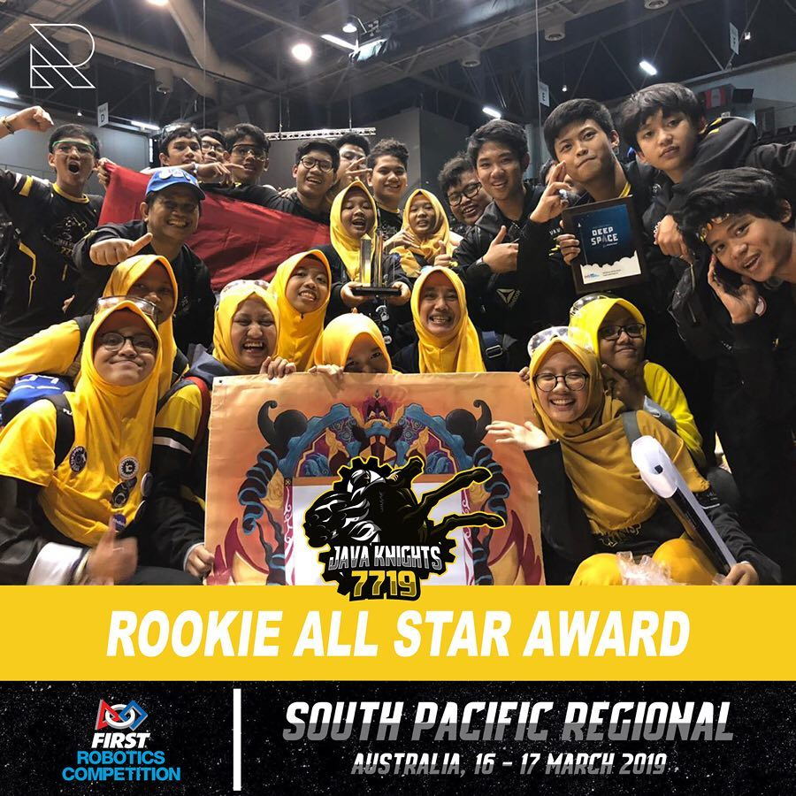

no copying
MISSION
"To inspire more students and make them more interested in the STEAM field and business, and to encourage high school students to develop knowledge on science and technology"
OUR HISTORY

Java Knights successfully achieved the 'Rookie Inspiration Award' in the 'FIRST Robotics Competition (FRC) Southern Cross Regional' which is held on Sydney, Australia in 2019.
'Rookie Inspiration Award' shows that the Java Knights team succeeded in showing appreciation of advancement in technology and engineering in schools or in communities as a rookie.

Java Knights also won the 'Rookie All-Star Award' in the 'FIRST Robotics Competition (FRC) South Pacific Regional' that is also held in Sydney, Australia in 2019.
'Rookie All-Star Award', in the FRC celebrates success from showing teamwork and collaboration, and also implements FIRST's mission to inspire students to learn more about science and technology as a rookie.